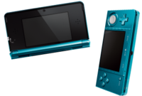
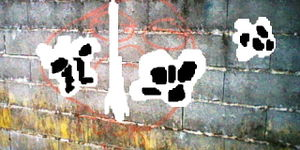
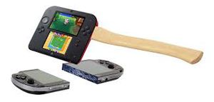

Nintendo 3DS
 De: La Frikipedia, la enciclopedia extremadamente seria.
De: La Frikipedia, la enciclopedia extremadamente seria.
| De la serie Consolas de videojuegos:
|
| Noentiendo 3DS.
|
| 
|
| 3DS en perfecto estado
|
|
| Nombre
|
Noentiendo 3DS.
|
| Otros nombres
|
Noentiendo tresdeese, tresdese, mierda, timo, revienta ojos...
|
| Compañía creadora
|
Noentiendo
|
| Principales títulos
|
Muuuuuuuuuuuuuuuuuuuuuuuuuuuuuyyyy pocos putos timadores de Noentiendo
|
| Otros usos
|
Navegar en internet a -3MB. Y ver porno, en gifs animados no en vídeos.
|
| Notas
|
Me san jodido los ojos
|

Esto es lo que pasa cuando usas el 3D de la 3DS
La Noentiendo 3DS es una nueva consola dirigida por Noentiendo. Según los timadores de Noentiendo, es una mierda de consola se ve en 3D, cosa que ellos dicen pero que no es verdad, ya que casi todos los empleados de Noentiendo se drogan, alucinan, y por eso ven la consola en 3D.
Hay varios colores de 3DS: negro, rojo, azul, blanco, color polla, etc...
Juegos de la 3DS
- Supra Mayro 3D
Tetas Landia
- The Legend of
Chuck Norris Zelda Ocarina of the Time 3D
- Super Smash
All Stars Battle Royale Bros 3DS
- Mario
Cartas Kart 7
- Pokemon X
XX y Y
- Monkey Konga
Tanga Country Retards 3D
- Street Fighter
- Kid Icarius
en el Puticlub Uprising
- Residente DEvil: Revelations
- Nintendogs +
Putas Cats
- Equipo de metal sólido:comedor de serpientes
-
Marihuana Mario y Luigi: Equipo del sueño.
- Bravely Default (Final Fantasy version Hentai)
- Mayro Party
Putas Island Tour
- The Legend of
Chuck Norris Bituin Words
- Weegee Mansion
de Putas 2
- Niu Supra Mayro Bross (Copiar y pegar de Supra Mayro Bross Vii)
- El Profesor
Gayton Layton y el legado de los Oshawott Asatlanti
- El Profesor
Gayton vs Penis Phoenix Gay Wrigth Asse Torney
- Scrabble Unlimited
- Joshy
Gay New Island
- Kirby Triple
PeNE Deluxe
Solo tiene estos juegos porque los timadores empleados de Noentiendo no tienen tiempo para fumarse tantos porros para hacer un videojuego en 3D. Además fumar tanto porro es malo para la chalud.
Características
| Atributo
|
Valor/descripción
|
| Dimensiones
|
20cm anchox2cm y pico de alto.
|
| Peso
|
800kg con lápiz y 890kg sin lápiz WTF?!.
|
| Forma
|
Muy bonita. Tiene una parte superior de una sola capa de un color ojcuro, una bisagra cuyos pellizcos amputan dedos y una parte inferior con dos capas de colores mas claritos.
|
Vida inutil
|
800 nanosegundos, 799 en Canarias putos racistas de noentiendo.
|
| Pantalla superior
|
3D con pantallazos negros y azules (pantallazos arcoiris en el día del orgullo gay), iluminación con bombillas incandescentes y puede mostrar muchos colorines y unicornios rosas voladores malignos del averno, ah no, que me he fumado un porro.
|
| Pantalla inferior
|
Mas pequeña que la superior haciendo que las imágenes sufran una desproporción horrible. Ah, y es táctil, es decir que si la tocas te da placer y descargas eléctricas.
|
| Controles
|
Botón deslizante mu bonito, cruz griega que no se usa debido al botón deslizante y sólo está para decorar, botones P, U, T, A, A, B, X, Y, botón take me home (para teletransportarte a casa) y lápiz táctil con forma de polla.
|
| Ranuras
|
Sólo tiene una, haciendo que los juegos de geinboi se queden desfasados, siendo necesario acumularlos en vertederos para su posterior combustión despiadada.
|
| Lápiz
|
De amianto 100%.
|
| Misceláneo
|
Tiene un micrófono en la pantalla inferior, haciendo que los sonidos se detecten de forma horrible teniendo que hablar a grito pelao.
|
| Lucecitas
|
Una al lado de la bisagra que te dice cuando te cruzas con alguien (verde), cuando está conectado un follamigo amigo (naranja), cuando está la batería a punto de agotarse (rojo epileptico parpadeante), cuando te envían una carta por internet, o publicidad de noentiendo (la mayor parte de las veces) (azul), cuando te cruzas con un coche que en realidad es un transformer (negro) y cuando está hasta los cojones de que juegues con ella (morado).
Otras dos que están en la parte de abajo, una que indica como está la batería (de energía no de estado de ánimo melón) y otra que indica si la 3DS se está cagando en tu cama cargando o no.
|
| Cámaras
|
Dos en la parte exterior (para hacer fotos porno de tu abuela en tanga en trede) y una en la parte interior (para tomarte fotos a ti mismo como forever alone que eres). Ambas tienen impresionante definición: 1 píxel por m².
|
Programas instalados
 Foto hecha con la 3DS. Nótese las cagadas del periquito.
La 3DS al tener tan pocos juegos putos timadores de Noentiendo tiene instalados varios programas:
- Cámara: Ideal para hacer vídeos de peleas y colgarlos en yolotube y vídeos stop-motion sin ninguna utilidad. Aparece un periquito que te da consejos inútiles y te caga las fotos.
- Grabadora: Para grabar conversaciones de narcos y escuchar música pirateada de el Elemule. Tiene espacio para
3 canciones y 1'5 grabaciones putos timadores de Noentiendo. Además hay tres periquitos que te cagan en las grabaciones y después no se escuchan bien.
- Atrapacaras: En este juego tienes que matar a millones de caras que te destrozan la habitación (en el mundo real) y abren agujeros al espacio para que se escape todo el aire de la habitación. En el último nivel te la destrozan totalmente, además te joden la pantalla desde dentro con bolas de lefa que escupen por la boca.
-
PSN Noentiendo Eshop: Esta tienda te vende a muuuuuuuyyyyy alto precio juegos tan novedosos como el pacman. Además vende también juegos gratis como Pasa Cartas (Correo Noentiendo en Hispania) (mierdita que no tiene ninguna utilidad si tienes e-mail) en el que puedes mandar amenazas de muerte cartas con fotos de la vecinita del quinto y con grabaciones. Actualmente Shigeru Miyaputo les chingó el Correo Nintendo por todo el porno que se mandan los cagones a través de fotos, así que les sacó el SpotPass. Ya no se pueden comunicar en la Internerd asi que ya se chingaron.
- Juegos RA: En estos juegos tienes que poner tarjetas delante de la consola para que aparezcan cajas y dragones que te joden la habitación y te cojen por la noche.
- Editor de Mii:
Es un plagio del editor de la Wii Es perfecto para hacer retratos robots de mafiosos y violadores.
- Navegador de Internerd: Este programa viaja a -8000 megabytes de velocidad. No se pueden ver vídeos
lo siento IP anónima tu p0rn de pornotube no se puede ver. PERO EN GIF SI.
- Advertencias sobre salud y seguridad: Este es el mejor programa de todos, divertido, entretenido, gracioso y con modo multijugador.
- Registro de actividad: Este programa sirve para que Noentiendo y tu esposa/madre/novia controle el Porno que ves durante el día.
Tienda
Noentiendo E-SHOP
Mención especial merece la tienda en la que se venden juegos a cambio de que les des tu número de la tarjeta de crédito, puedes comprar:
- Juegos del año de la pera: Es decir, clásicos, como Super Mario Bros para la NES, Super Mario Land, Sonic... Y, sí, no son en 3D ¿te habías hecho ilusiones, verdad?
- Juegos raros,raros,raros: Como VVVVVV, y cualquiera con tantos colorines que producen epilepsia
- Juegos normales y en 3D: Aproximadamente hay 3,5 juegos así en toda la tienda
- Juegos
Pr0nograficos como Migthy Switch Force! 1 y 2 y Senran Kagura Burst donde todas las chicas tienen las media tetas
- Juegos de la DSi: No, no son en 3D coño.
Funciones
Esta mierda consola tiene varias funciones entre ellas:
Consola
Esta función es la mas secreta de todas. Solo el 0, 01% de los usuarios la conoce.
Cámara
Tiene dos cámaras exteriores en vez de una para verte mejor para hacer fotos en 3D de altísima calidad a 1 píxel por m² putos timadores de Noentiendo.
Podómetro
Controla los pasos que das para saber en que zona del mundo estás para bombardearte con ondas malignas el cerebro desde el espacio con el satélite maligno de Noentiendo y así hacer que compres sus productos. Además te dan monedas cada 100 pasos.
Arma
Como arma arrojadiza y de pellizcos para tus enemigos, justo como la DS. Su contraparte del inframundo, 2DS, Sirve como acha.
Jode-ojos
Si usas el 3D se te joden los ojos, si un crío menor de 16 años lo utiliza le da vueltas la cabeza, le explotan los ojos y el cerebro, sufre convulsiones, su alma se va a un agujero negro controlado por Satoru Penewata y al final le explota el cuerpo entero.
Street Pass
Esta función te dice con quien te encuentras por la calle con 3DS. Aunque te la pueden robar No tiene ninguna utilidad mas, pero a la gente le da un gustirrinín ver que se encuentran a alguien ya que solo el 0.1% de la población mundial tiene 3DS.
Rediseños de la Consola
Noentiendo 3DS XXX XL
Noentiendo, pensaba que la gente no estaba satisfecha con el 3D, por eso, hicieron el ninetudo 3DS XL para joderte los ojos mas aún y que alucines como si estubieras tomando LSD.
Colores Disponibles
- Azul Megaman + Nigga
- Rojo Zero + Nigga
- Plateado Metal + Nigga
-
Pene Rosado + Shele Blanco
Ediciones Especiales limitadas
- Zelda Bituin Words Color
Cani Oro + Nigga
-
Mariguana Mayro y Weegee Droga Team Bros Color Plateado
- Animal Crossing Color Marica Arcoiris
- Pokémon
XXX color Azul Megaman
- Pokémon Ygriega Color Rojo Zero
-
Pitochu Pikachu Color Amarillo + Shele Blanco
- 30
anos años de Weegee Color Plateado + Vomito Verde
Mejoras
- Permite tener alucinaciones mucho mejor
- Permite Ver el
porno mas grande y ver las tetas mas grandes juego en 3D
- Tiene una duracion de bateria mas larga que la anterior.
Para poder tener una masturbacion mas larga
- Tiene una tarjeta SD de 4 GB, el doble de la anterior,
Asi para tener la doble cantidad de porno
- El Lapiz va a estar siempre
En Ereccion largo, osea, ya no se sube o baja.
- Los botones start, select, y casita son totalmente botones reales, no como antes plastico
prepucio
Desmejoras
- En Hispania (
Lugar de nacimiento de los canis) se va a vender sin cargador, o sea WTF
- Tus ojos se te van a joder el doble de fuerte que la anterior 3ds con el efecto 3D.
- Tiene menos volumen que la anterior.
Despidete de los orgasmos fuertes
- ¿Como mierda la meto en mis bolsillos?
Nintendo 2DS
Nintendo se preocupo por la gente que no compraba la consola asi que sacaron su version sin el efecto 3D mata niños y con forma de Game Boy con un precio mas barato que el pan. Tenga cuidado de no ponerle un palo porque o si no se va a convertir en un hacha.
Mejoras
- No tiene el alucinogeno efecto 3D mata niños
- Es mas barata que la Nintendo DSi XL
- Al igual que la XL, tiene una tarjeta de 4 gb
- Dura mas su bateria
- Adios al puto problema de las pantallas rotas (Los niños dividen la consola al 50% las que se pueden cerrar)
 Nintendo 2DS destrosando a su mayor enemigo
Desmejoras
- ¿Donde mierda la guardo?
- No podras
ver tetas en 3D
- La
puta consola no se puede cerrar coño
- ¿Como mierda voy a poder jugar Kid Icarus Uprising?
- Los putos botones subieron para arriba
- Su altavoz es mono
- Se te pueden rallar las pantallas
- Si queres cuidar tu Gameboy DS comprale una bolsa.
putos timadores de noentiendo
|
|
 Shooter Shooter
 Terror Terror
 Velocidad Velocidad
 Rol Rol
 Estrategia Estrategia
 Aventuras Aventuras
 Fight! Fight!
 Clásicos Clásicos
 Deportivos Deportivos
 Aventura gráfica Aventura gráfica
 Novela visual Novela visual
 Personajes de videojuegos Personajes de videojuegos
|
Autor(es):
- Fordus
- Gñapero Solitario
- Gororo
- Genericool
- EDOARDOMASTER
- Shadowmura
- Generibot
- Fedello
- Daniana
- Xdddx
Frikipedia 2005-2016, Licencia
GFDL 1.2 - Extraído por FrikiLeaks